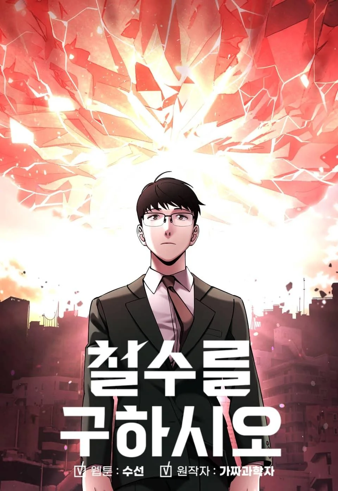
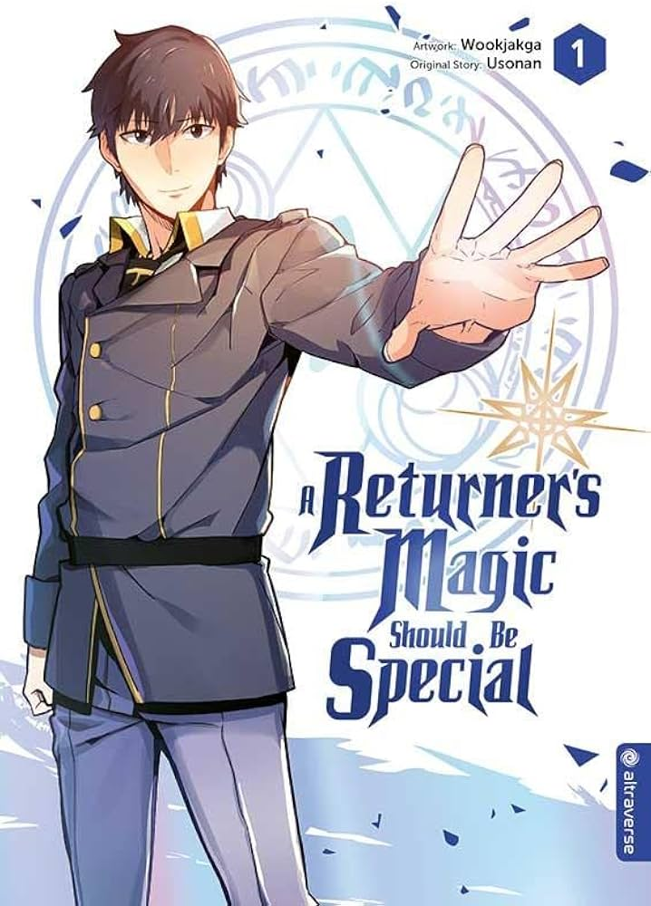
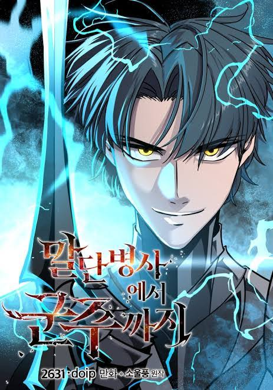

🥇 Cheolsu Saves the World
Tags: Regression, Apocalypse, Science Fiction
Chapter Count: 69 (Completed)
Author(s): Fake Scientist, Soosun
Artist(s): Soosun
Humanity has failed to stop a giant asteroid from plummeting into Earth, and life as we know it has ended. An ordinary Korean office worker named Cheolsu is somehow given the chance to go back in time and prevent this catastrophe from ever happening. Does he have a chance?
Read at:
WEBTOON
MANGADEX
RATINGS
Story: ⭐⭐⭐⭐⭐
Art: ⭐⭐⭐⭐
Pacing: ⭐⭐⭐⭐⭐
Characters: ⭐⭐⭐⭐⭐
World-Building: ⭐⭐⭐⭐
TOTAL: ⭐⭐⭐⭐⭐

🥈 A Returner's Magic Should Be Special
Tags: Fantasy, Magic Academy, Regression
Chapter Count: 269 (Completed)
Author(s): Usonan
Artist(s): Wookjakga
The world is on the brink of destruction after a devastating ten-year war in the “shadow labyrinth.” Desir Herrman is one of the last skilled magicians left standing, but even he is no match for the formidable foe threatening humanity's very existence. Just when he's certain the end has come, he is sent back in time to his early days of studying magic at the prestigious Hebrion Academy! With this rare second chance, Desir is determined to save not only himself but also the friends and comrades he once lost. Armed with the knowledge of what their future holds, can his efforts make a difference, or are they all doomed to relive the same terrible destiny?
Read at:
WEBTOON
MANGADEX
RATINGS
Story: ⭐⭐⭐⭐
Art: ⭐⭐⭐⭐⭐
Pacing: ⭐⭐⭐⭐⭐
Characters: ⭐⭐⭐⭐⭐
World-Building: ⭐⭐⭐⭐
TOTAL: ⭐⭐⭐⭐⭐

🥉 The Story of a Low-Rank Soldier Becoming a Monarch
Tags: Fantasy, Regression, Martial Arts, Swordsmanship
Chapter Count: 146 (Completed)
Author(s): Soul Style
Artist(s): JC Media
When Chris, a one-armed mercenary with considerable experience and skills, swallows an artifact after an unlikely encounter with a savage looter, he finds himself back in the past as a 15-year-old lowly foot soldier... with both his arms. This time, he will not let his life take an unfortunate turn. This time, he will not let his friends die in vain. This time, he will use his knowledge and reach for the sky.
Read at:
WEBTOON
MANGADEX
RATINGS
Story: ⭐⭐⭐⭐⭐
Art: ⭐⭐⭐⭐
Pacing: ⭐⭐⭐⭐⭐
Characters: ⭐⭐⭐⭐⭐
World-Building: ⭐⭐⭐⭐
TOTAL: ⭐⭐⭐⭐⭐